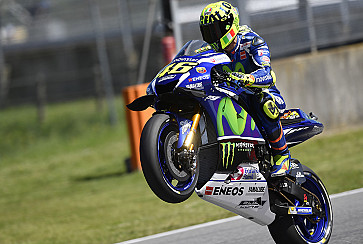

Valentino Rossi (Urbino, 16 febbraio 1979) è un pilota motociclistico, pilota automobilistico e dirigente sportivo italiano.
Tra i piloti più titolati del motociclismo, in virtù dei nove titoli mondiali conquistati (cinque dei quali vinti consecutivamente tra il 2001 e il 2005), è l'unico pilota nella storia del motomondiale ad aver vinto il titolo in quattro classi differenti: 125 (1), 250 (1), 500 (1) e MotoGP (6).
Dal 2022, dopo essersi ritirato dalla MotoGP, si dedica alle corse automobilistiche, partecipando al Campionato del mondo endurance, al GT World Challenge Europe e ad alcune gare Endurance della 24H Series e dell'Intercontinental GT Challenge.
Dal 2014 è proprietario della squadra motociclistica VR46.
Biografia

Valentino Rossi in sella alla moto
Figlio di Graziano Rossi, a sua volta pilota motociclistico a cavallo degli anni 70 e 80 del XX secolo, e di Stefania, nasce a Urbino per poi crescere a Tavullia, in provincia di Pesaro e Urbino. Grazie alla passione motociclistica del padre, Valentino vive fin dal suo primo anno di vita a contatto con i motori:
«Andavamo sul piazzale della Berloni, legavo con una corda la sua macchinina dietro al mio motorino e lo trainavo mentre faceva i traversi e il controsterzo. [Quanti anni aveva?] Forse manco due, me lo ricordo perché a due anni e mezzo ha avuto in regalo un motorino con le rotelle. Che ha tolto quasi subito.»
(Graziano Rossi, 2015)
Nel corso della sua carriera professionistica ha sempre usato il 46 come numero di gara, anche nelle annate in cui ha avuto la possibilità di sfoggiare l'1 di campione in carica, poiché questo era il numero precedentemente utilizzato nel motomondiale sia dal padre, sia successivamente da un pilota giapponese di cui era molto appassionato, Norifumi Abe; il numero 46 è stato ufficialmente ritirato dalla MotoGP nella stagione 2022, la prima successiva al ritiro di Rossi dalle due ruote. Dal succitato Abe, inoltre, Rossi trasse spunto per il suo primo soprannome agli esordi in classe 125, Rossifumi, cui seguì Valentinik con il passaggio in classe 250 e infine The Doctor dopo il primo titolo conseguito nella classe regina.
Dopo la separazione dei suoi ha avuto un fratello minore da parte di madre, Luca Marini, divenuto anche lui un pilota motociclistico.
Il 4 marzo 2022 diventa padre di una bambina, avuta dalla compagna Francesca Sofia Novello.
È un tifoso dell'Inter.